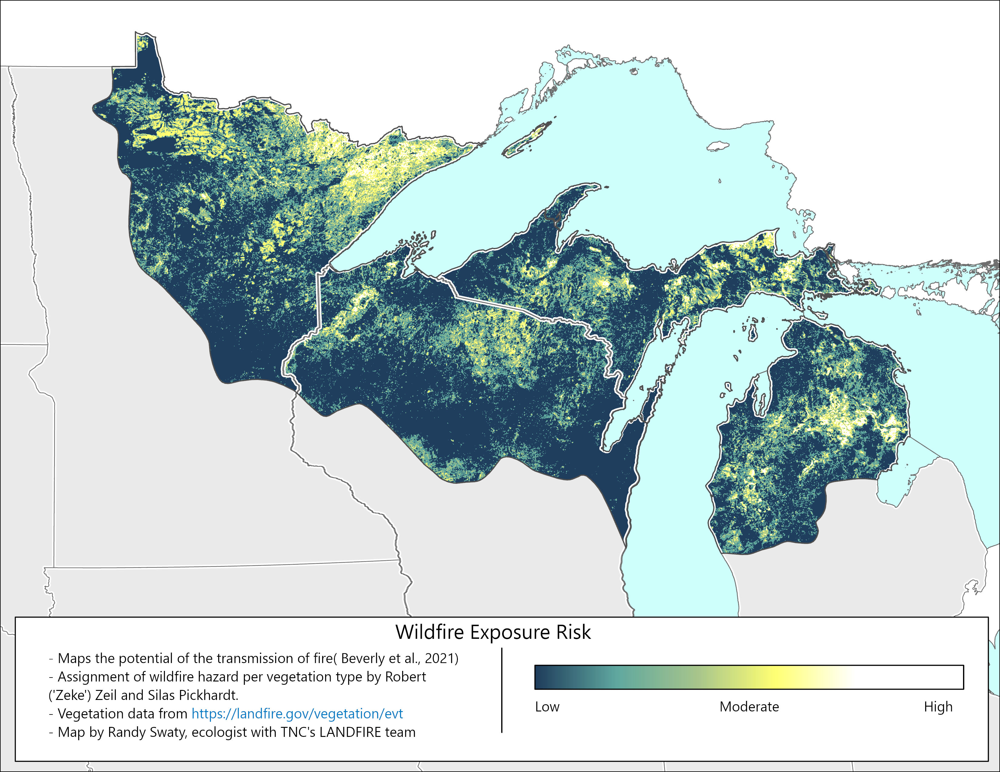
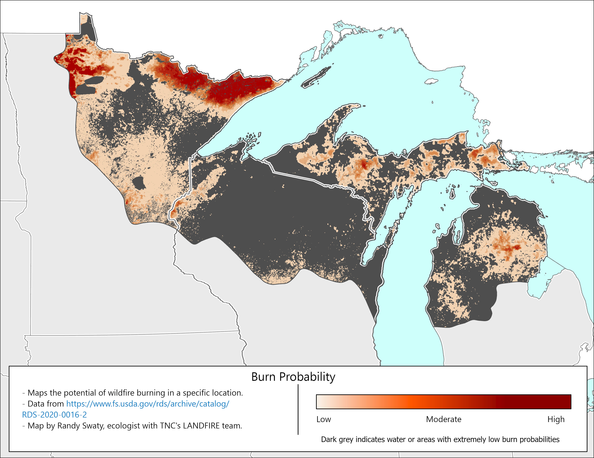

Current risk
INCOMPLETE DRAFT FOR INTERNAL CONSUMPTION ONLY
Mapping potential for wildfires
Below we present multiple maps that depict wildfire potential in some form. We present multiple datasets for comparison, but will focus on the Wildfire Exposure Risk map and data as it will form the foundation of future work.
All known wildfire risk data sets are based in large part on data from the LANDFIRE program. Others that are not presented below, but that you may have seen or are of interest include:
- Wildfire risk to properties by First Street Foundation and displayed on sites such as the NY Times (link to related article).
- Wildfire Risk by US County
- UrbanFootPrint
Wildfire Exposure Risk Draft Map
Using methods of Dr. Jennifer Beverly (see https://link.springer.com/content/pdf/10.1007/s10980-020-01173-8.pdf), LANDFIRE’s Existing Vegetation Type data and transmission hazard assignments from Robert (‘Zeke’) Zeil and Silas Pickhardt we generated this draft map. For more detailed methods visit an assessment Silas completed for the central region of the Upper Peninsula of MI here.
Breif Methods
- LANDFIRE’s Existing Vegetation Type (EVT) data for 2024 downloaded and clipped to the Northwoods. The attribute table was exported.
- Robert Zeil and Silas Pickhardt collaborated to assign each EVT type a ‘transmission hazard’ score from 0-100, which represents the likeihood that an ember would be transported 500m in the event of a fire.
- Joined transmission hazard scores to LANDFIRE EVT raster.
- Focal Statistic Tool was run in ArcGIS pro on the transmission hazard scores with 16 pixels in a circle area selected. This process “smooths” and contextualizes pixels. For example, a jack pine pixel (high transmission hazard) in the middle of northern hardwoods pixels gets adjusted “down” (i.e., it poses no hazard), where as a jack pine pixel surrounded by jack pines is a different story.
Please review the following maps. One reason we are leaning on this methodology is that it is easy to adjust. For example we could:
- Change the transmission hazard ratings to better capture current wildfire exposure risk
- Develop future scenarios based on expected changes to transmission hazard
- Adjust the hazard ratings to be ‘more sensitive’, e.g., change them to represent likelihood of transmitting an ember 100M.
Zeil has used this method for multiple landscapes, and finds that areas mapped with high WFE values are the ones that burn most frequently.

Same data, in hexagon form for review
Below is an interactive map where each 10k acre hexagon is colored by the mean Wildfire Exposure Risk value from the map above, and a text category assigned based on the value for ease of review. This presentation of the data results in a loss of resolution, but is easy to explore and the resulting hexagons increase accuracy through averaging input values.
Summary of Wildfire Exposure Risk
The highlighted areas generally line up with known fire-prone vegetation types, such as the arrowhead region of MN, the sand plains of NW WI and the central portion of the lower peninsula of MI (to name a few). For future planning maps and/or data may need to be adjusted to be more ‘restrictive’ so that it is easier to prioritize.

Burn probability
This data set represents “the annual probability of wildfire burning in a specific location” and was downloaded here. It is developed through a fairly complex and robust process described in a white paper by Scott et al. (2024). While useful for comparison and ‘triangulation’ with other data sets, we do not plan to base future-looking scenarios on this Burn Probability data.

Wildfire Hazard Potential
Wildfire Hazard Potential depicts “the relative potential for high-intensity wildfire that may be difficult to manage” (Dillon et al. (2024)). Another robust dataset, it relies on heavy modeling and fairly complex methods.